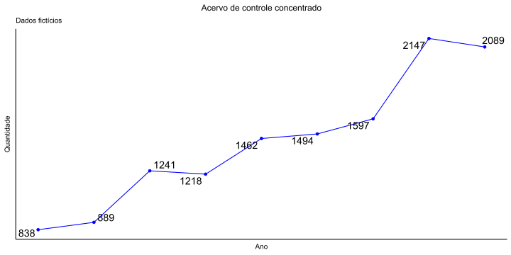

# Módulos
import polars
import gensim
from gensim.models.doc2vec import Doc2Vec
# Função
def infer_vector(text):
return model.infer_vector(text.split())
# Modelo pré-treinado para Embedding
model = gensim.models.Doc2Vec.load("modelo.model")
# Dados
df = polars.read_csv("dados.csv",columns=[1,3,4])
# Saída: DataFrame com duas colunas: Texto original e vetor Embedding correspondente.
df = df.with_columns_seq(polars.col("texto").apply(infer_vector).alias("vetor"))Agrupador de processos de controle concentrado
Projeto de TCC 1
Estudante
Thais Carvalho Valadares Rodrigues
Orientadora
Sumário
- Introdução
- Objetivos
- Metodologia
- Cronograma
- Referências
Introdução
No campo do direito, a aplicação de técnicas estatísticas vem sendo testada em diversos âmbitos, inclusive no Supremo Tribunal Federal do Brasil.
É de interesse do tribunal a aplicação destas técnicas para agrupamento de processos. Um agrupador poderia ajudar a identificar processos semelhantes, trabalho este feito manualmente.
Este trabalho busca estudar e aplicar algumas destas técnicas para o desenvolvimento de uma aplicação prática no STF, com objetivo de agrupar processos de controle concentrado.
Objetivos
O objetivo deste trabalho é formular um agregador de processos de controle concentrado, que são processos que tratam da constitucionalidade de leis e atos normativos. Constituem o dito controle concentrado os processos do Supremo Tribunal Federal das seguintes classes:
- ADI (Ação Direta de Inconstitucionalidade)
- ADC (Ação Declaratória de Constitucionalidade)
- ADPF (Arguição de Descumprimento de Preceito Fundamental)
- ADO (Ação Direta de Inconstitucionalidade por Omissão)
Objetivos
O agrupador fornecerá subsídios aos responsáveis pelo encaminhamento dos processos que chegam ao STF, visando reduzir o trabalho mecânico humano.
Dos objetivos específicos, espera-se:
- Processar os dados utilizando técnicas de Processamento de Linguagem Natural (PLN), transformando petições iniciais de processos em vetores numéricos;
- Comparar técnicas de agrupamento;
- Avaliar a similaridade entre processos em recortes temporais distintos;
- Estudar técnicas de PLN, análise multivariada e visualização de dados.
Metodologia
Tendo os dados e o modelo pré-treinado para vetorização, os códigos Python e R para a vetorização dos textos, e posterior análise, são da seguinte forma:
# Pacote
library(reticulate)
# Definindo o ambiente virtual python
reticulate::use_condaenv("TCC")
# Executando o script python
reticulate::source_python("script.py")
# Ajustando o dataframe trazido do python para formato R mais adequado
df <- as.data.frame(do.call(rbind, lapply(a, function(x) c(x[[1]], x[[2]]))), stringsAsFactors = FALSE)Metodologia
Passos para a construção do agregador:
- Obtenção dos dados:
Os dados foram disponibilizados pelo STF (mas estão disponíveis publicamente no Portal do STF.).
- Vetorização (incluindo ocerização e processamento do texto PDF):
Este módulo foi fornecido pelo STF (dados em formato CSV)


Metodologia
- Definir recortes temporais para a agregação:
Por conta da natureza cíclica dos processos que compõem o acervo do STF, é necessário um sistema de atualização constante para uma aplicação prática.
Será realizado o agrupamento com dados em recortes temporais distintos, e, em cada recorte, será avaliada a similaridade entre os processos em tramitação naquela data.

Metodologia
- Aplicação de medidas de distância para comparar a similaridade dos processos (distância euclidiana, distância do cosseno etc).
Metodologia
- Para a formação dos agrupamentos, serão utilizadas técnicas de agrupamento hierárquico e não-hierárquico baseadas nas distâncias calculadas.
- Para a visualização dos dados, serão estudadas técnicas como dendrogramas e t-SNE.
Cronograma
| Atividades | Mar | Abr | Mai | Jun | Jul |
|---|---|---|---|---|---|
| Escolha do tema a ser abordado. | |||||
| Levantamento de bibliografia relacionada ao tema. | |||||
| Definição do recorte temporal com a AAJ do STF. | |||||
| Solicitação dos dados para a STI do STF. | |||||
| Solicitação dos algoritmos à STI do STF. | |||||
| Revisão de literatura. | |||||
| Desenvolvimento da proposta de projeto. | |||||
| Análise preliminar do banco de dados. | |||||
| Entrega da proposta do projeto. | |||||
| Elaboração da apresentação da proposta. | |||||
| Manipulação do banco de dados. | |||||
| Análise do banco de dados. | |||||
| Elaboração do relatório parcial. | |||||
| Entrega do relatório parcial a Professora Orientadora. | |||||
| Correção do relatório parcial. | |||||
| Entrega do relatório parcial a banca. |
Cronograma
| Atividades | Ago | Set | Out | Nov | Dez |
|---|---|---|---|---|---|
| Desenvolvimento do modelo e da aplicação. | |||||
| Elaboração do relatório final. | |||||
| Entrega do relatório final a Professora Orientadora. | |||||
| Correção do relatório final. | |||||
| Entrega do relatório final para a banca. |
Referências
- ARTES, R.; BARROSO, L. P. Métodos multivariados de análise estatística. [S.l.]: São Paulo: Blucher, 2023.
- EVERITT, B.; SKRONDAL, A. The cambridge dictionary of statistics. [S.l.]: Cambridge University Press, 2010. v. 4.
- FREITAS, L. J. G. et al. Catboost algorithm application in legal texts and un 2030 agenda. Revista de Informatica Teórica e Aplicada - RITA - ISSN 2175-2745. Vol. 30, Num. 02 (2023) 51-58, 2023.
- FREITAS, L. J. G. et al. Text clustering applied to data augmentation in legal contexts. arXiv preprint arXiv:2404.08683, 2024.
- JOHNSON, R. A.; WICHERN, D. W. Applied Multivariate Statistical Analysis. [S.l.]: 6. ed.[S.l.]:Prentice Hall, 2007.
- KAUFMAN, L.; ROUSSEEUW, P. J. Finding groups in data: an introduction to cluster analysis. [S.l.]: John Wiley & Sons, 1990.
- LECUN, Y. et al. Gradient-based learning applied to document recognition. Proceedings of the IEEE, Ieee, v. 86, n. 11, p. 2278–2324, 1998.
- MAATEN, L. Van der; HINTON, G. Visualizing data using t-sne. Journal of machine learning research, v. 9, n. 11, 2008.
- MACQUEEN, J. et al. Some methods for classification and analysis of multivariate observations. [S.l.], 1967. v. 1. 281–297 p.
- MORETTIN, P. A.; SINGER, J. M. Estatística e Ciência de Dados. [S.l.]: LTC, 2021.
- RICARDO, B.-Y.; BERTHIER, R.-N. Modern information retrieval: the concepts and technology behind search. [S.l.]: New Jersey, USA: Addi-son-Wesley Professional, 2011.
- von Borries, G.; WANG, H. Partition clustering of high dimensional low sample size data based on p-values. Computational statistics & data analysis, v. 53, n. 12, p. 3987-3998, 2009.

Departamento de estatística - UnB